01 Structural Biology Computational Agent
A research and implementation proposal for an extensible scientific agent
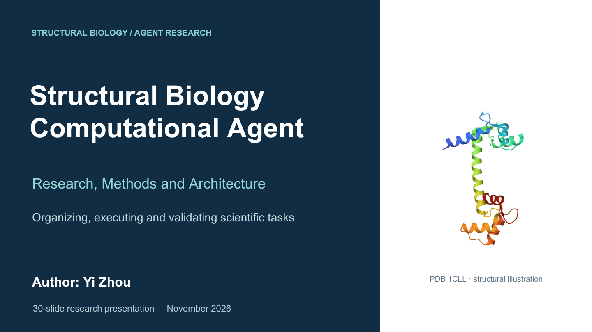
Author: Yi Zhou
English edition of the 30-slide research presentation. Capability maps describe target scope, not completed deployment or measured performance.
02 Research Roadmap
Establish the field and research question before introducing architecture and experiments
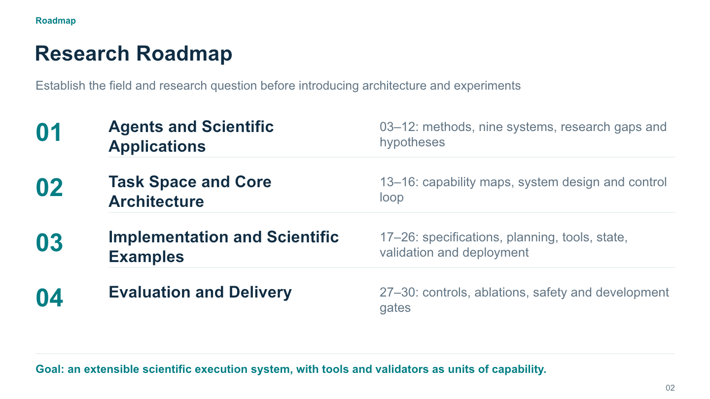
Slide content
| 01 | Agents and Scientific Applications | 03–12: methods, nine systems, research gaps and hypotheses |
| 02 | Task Space and Core Architecture | 13–16: capability maps, system design and control loop |
| 03 | Implementation and Scientific Examples | 17–26: specifications, planning, tools, state, validation and deployment |
| 04 | Evaluation and Delivery | 27–30: controls, ablations, safety and development gates |
Goal: an extensible scientific execution system, with tools and validators as units of capability.
03 Structural Research Connects Multiple Modalities
Sequences, experiments and models contribute different forms of scientific evidence
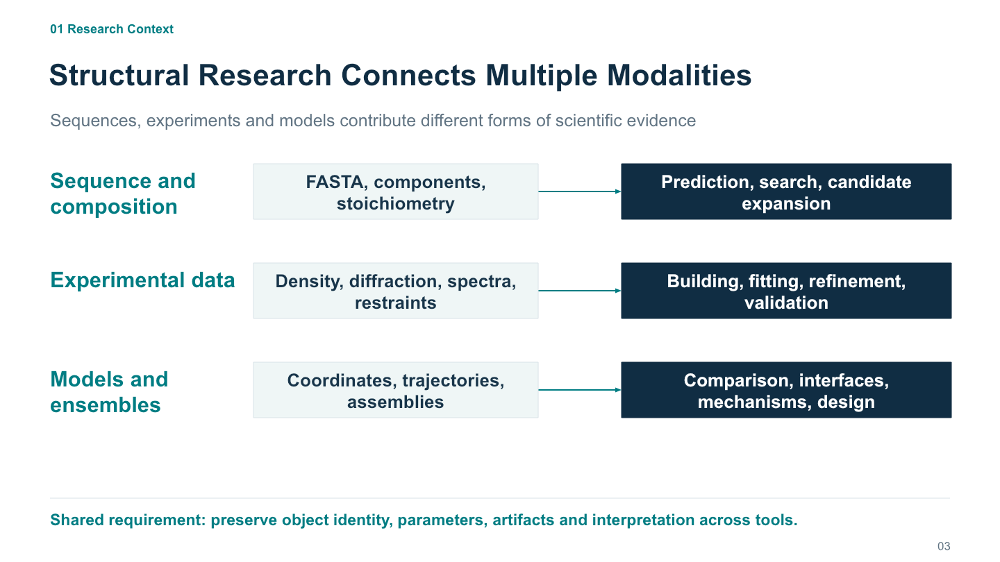
Slide content
| Sequence and composition | FASTA, components, stoichiometry | Prediction, search, candidate expansion |
| Experimental data | Density, diffraction, spectra, restraints | Building, fitting, refinement, validation |
| Models and ensembles | Coordinates, trajectories, assemblies | Comparison, interfaces, mechanisms, design |
Shared requirement: preserve object identity, parameters, artifacts and interpretation across tools.
Prediction, experimentally restrained modeling, search and mechanistic analysis support different claims. A predicted model does not by itself establish experimental support, object identity or causality. This page organizes inputs and task roles without ranking methods across unrelated benchmarks.
Original papers, documentation and projects
04 Agent Foundations: Reasoning, Action, Observation
A model proposes decisions, tools return observations, and a runtime constrains permitted actions
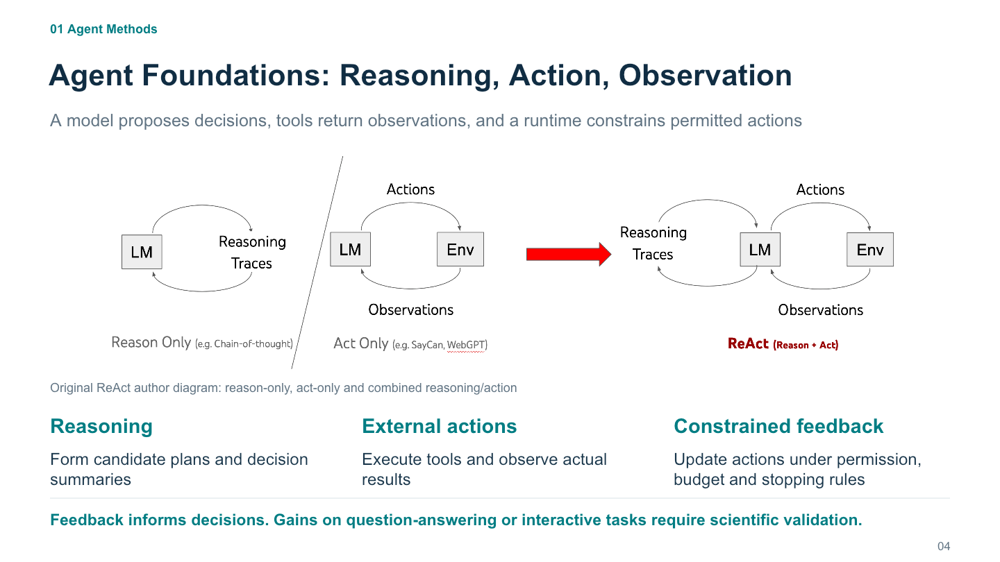
Slide content
| Reasoning | Form candidate plans and decision summaries |
| External actions | Execute tools and observe actual results |
| Constrained feedback | Update actions under permission, budget and stopping rules |
Feedback informs decisions. Gains on question-answering or interactive tasks require scientific validation.
Original ReAct author diagram: reason-only, act-only and combined reasoning/action. This is a methods illustration, not a structural-biology experiment from this project. Audit actions, observations and decision summaries without requiring disclosure of private model reasoning.
Original papers, documentation and projects
05 Agent Methods Change Different System Components
Compare mechanisms and assumptions rather than treating papers as a single performance ranking
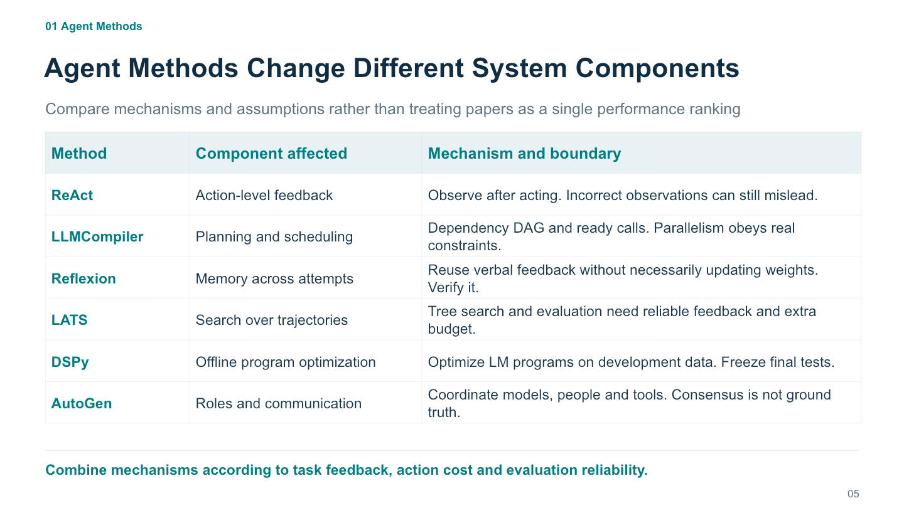
Slide content
| Method | Component affected | Mechanism and boundary |
| ReAct | Action-level feedback | Observe after acting. Incorrect observations can still mislead. |
| LLMCompiler | Planning and scheduling | Dependency DAG and ready calls. Parallelism obeys real constraints. |
| Reflexion | Memory across attempts | Reuse verbal feedback without necessarily updating weights. Verify it. |
| LATS | Search over trajectories | Tree search and evaluation need reliable feedback and extra budget. |
| DSPy | Offline program optimization | Optimize LM programs on development data. Freeze final tests. |
| AutoGen | Roles and communication | Coordinate models, people and tools. Consensus is not ground truth. |
Combine mechanisms according to task feedback, action cost and evaluation reliability.
Original evaluations cover QA, code, web and interactive environments. They do not establish performance on this project’s scientific tasks. DSPy is an offline optimization method, not a mandatory online tool-loop stage. Reflexion can reuse verbal experience without updating model weights. Distinguish the AutoGen paper’s mechanism from later SDK versions.
06 Workflow, Single Agent or Multiple Agents?
Fixed computation can use explicit paths. Dynamic selection and collaboration need measurable benefits
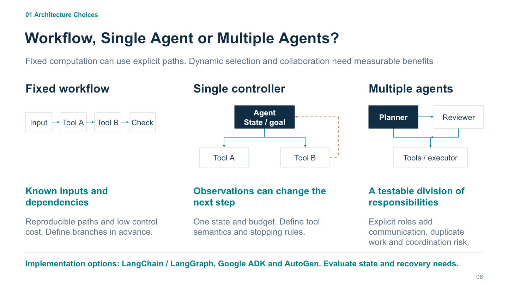
Slide content
| Fixed workflow | Known inputs and dependencies | Reproducible paths and low control cost. Define branches in advance. |
| Single controller | Observations can change the next step | One state and budget. Define tool semantics and stopping rules. |
| Multiple agents | A testable division of responsibilities | Explicit roles add communication, duplicate work and coordination risk. |
Implementation options: LangChain / LangGraph, Google ADK and AutoGen. Evaluate state and recovery needs.
Conceptual patterns, not a quantitative ranking. Report success, cost, latency, errors and human intervention under matched tools and budgets. Frameworks do not map one-to-one to patterns. LangChain organizes models, tools and middleware. LangGraph supports stateful workflows and agents. ADK provides agent and workflow components. Framework features do not ensure scientific correctness. Start this project with one controller and a persistent state graph; test collaboration as an additional mechanism.
07 A Research-Role Map of Biological Agents
Nine examples occupy different research roles: frameworks, research systems and software entry points
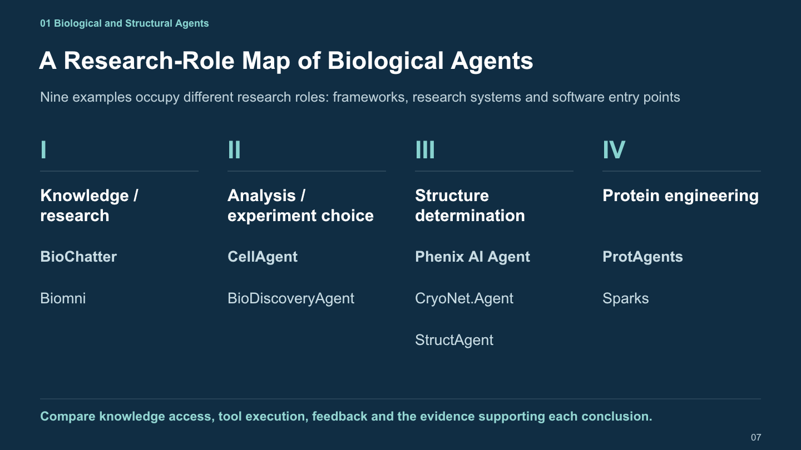
Slide content
| Knowledge / research | BioChatter | Biomni | |
| Analysis / experiment choice | CellAgent | BioDiscoveryAgent | |
| Structure determination | Phenix AI Agent | CryoNet.Agent | StructAgent |
| Protein engineering | ProtAgents | Sparks |
Compare knowledge access, tool execution, feedback and the evidence supporting each conclusion.
A representative, overlapping classification rather than an exhaustive map or common autonomy ranking. BioChatter is an application framework. Biomni and CellAgent are research systems. Phenix and CryoNet entries use official implementation or capability documentation, which is not comparable to a shared benchmark protocol.
Original papers, documentation and projects
- https://www.nature.com/articles/s41587-024-02534-3
- https://github.com/snap-stanford/Biomni
- https://arxiv.org/html/2407.09811v1
- https://arxiv.org/abs/2405.17631
- https://www.phenix-online.org/documentation/reference/ai_agent.html
- https://cryonet.ai/agent/
- https://github.com/bhgtiger/StructAgent
- https://pubs.rsc.org/en/content/articlehtml/2024/dd/d4dd00013g
- https://arxiv.org/html/2504.19017v1
08 Knowledge, Analysis and Experimental Decisions
These routes change different stages of research and use different kinds of feedback
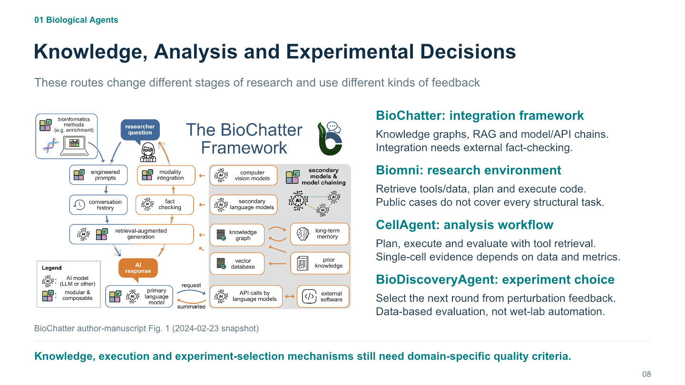
Slide content
| BioChatter: integration framework | Knowledge graphs, RAG and model/API chains. Integration needs external fact-checking. |
| Biomni: research environment | Retrieve tools/data, plan and execute code. Public cases do not cover every structural task. |
| CellAgent: analysis workflow | Plan, execute and evaluate with tool retrieval. Single-cell evidence depends on data and metrics. |
| BioDiscoveryAgent: experiment choice | Select the next round from perturbation feedback. Data-based evaluation, not wet-lab automation. |
Knowledge, execution and experiment-selection mechanisms still need domain-specific quality criteria.
Left: BioChatter author-manuscript Fig. 1, snapshot 2024-02-23, preserving its original meaning. The other three systems do not share this diagram. CellAgent follows the 2024 preprint mechanism, without mixing later-version scores. BioDiscoveryAgent illustrates experimental selection, not an instrument-control protocol.
09 Structural Agents: Software and Quality Gates
Scientific engines build, fit and refine models. Agents organize steps, constraints and review
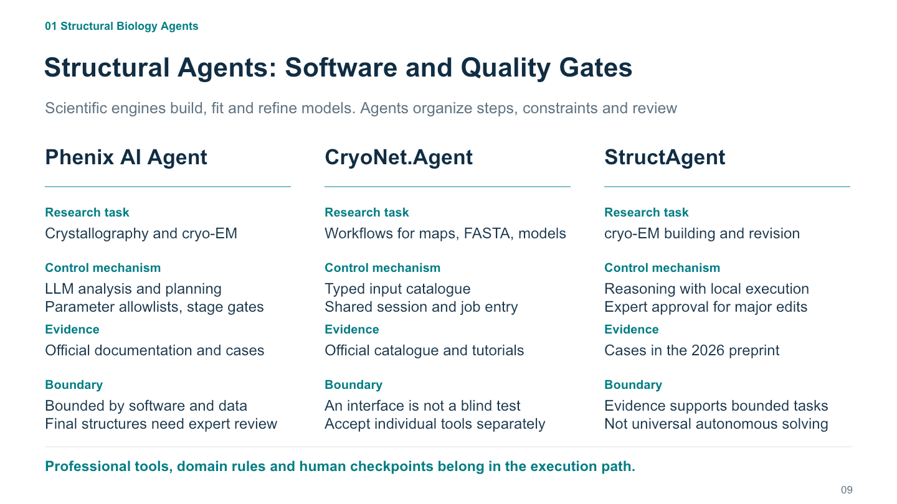
Slide content
| Phenix AI Agent | Crystallography and cryo-EM | LLM analysis and planning Parameter allowlists, stage gates | Official documentation and cases | Bounded by software and data Final structures need expert review |
| CryoNet.Agent | Workflows for maps, FASTA, models | Typed input catalogue Shared session and job entry | Official catalogue and tutorials | An interface is not a blind test Accept individual tools separately |
| StructAgent | cryo-EM building and revision | Reasoning with local execution Expert approval for major edits | Cases in the 2026 preprint | Evidence supports bounded tasks Not universal autonomous solving |
Professional tools, domain rules and human checkpoints belong in the execution path.
Phenix documents PERCEIVE, THINK, PLAN, BUILD, VALIDATE and OUTPUT; LLMs mainly participate in THINK and PLAN. CryoNet descriptions use the archived official HTML when live retrieval timed out. StructAgent here is Xiaohu Guo’s cryo-EM system, not the unrelated arXiv:2607.11388 namesake. Cases and product documentation cannot support direct success-rate comparisons.
10 Protein Engineering: Design and Hypothesis Tests
Generation, prediction, simulation and experimental validation support different levels of evidence
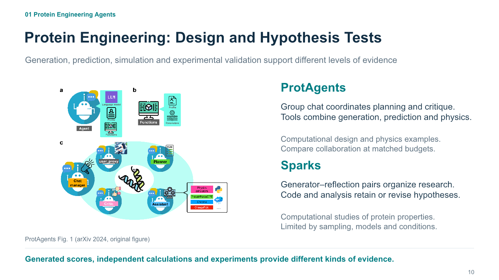
Slide content
| ProtAgents | Group chat coordinates planning and critique. Tools combine generation, prediction and physics. | Computational design and physics examples. Compare collaboration at matched budgets. |
| Sparks | Generator–reflection pairs organize research. Code and analysis retain or revise hypotheses. | Computational studies of protein properties. Limited by sampling, models and conditions. |
Generated scores, independent calculations and experiments provide different kinds of evidence.
Left: original ProtAgents Fig. 1, preserving its meaning, not our architecture. ProtAgents demonstrates computational studies rather than a universal scientific benchmark. Sparks combines generation, prediction, secondary-structure/property models and MD. Surrogate scores or simulations do not establish experimental confirmation. External validation remains necessary.
11 From Existing Systems to Our Research Questions
Existing work closes several research loops. Reliability across broader task combinations still needs testing
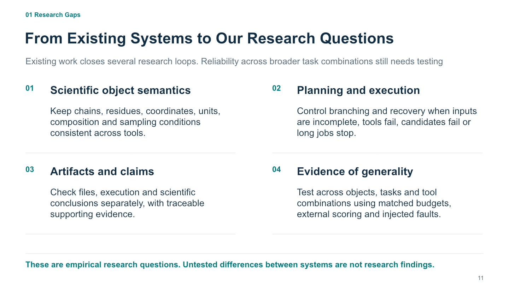
Slide content
| Scientific object semantics | Keep chains, residues, coordinates, units, composition and sampling conditions consistent across tools. |
| Planning and execution | Control branching and recovery when inputs are incomplete, tools fail, candidates fail or long jobs stop. |
| Artifacts and claims | Check files, execution and scientific conclusions separately, with traceable supporting evidence. |
| Evidence of generality | Test across objects, tasks and tool combinations using matched budgets, external scoring and injected faults. |
These are empirical research questions. Untested differences between systems are not research findings.
12 Positioning and Testable Hypotheses
Study an extensible structural-biology agent for task organization and reliable scientific execution
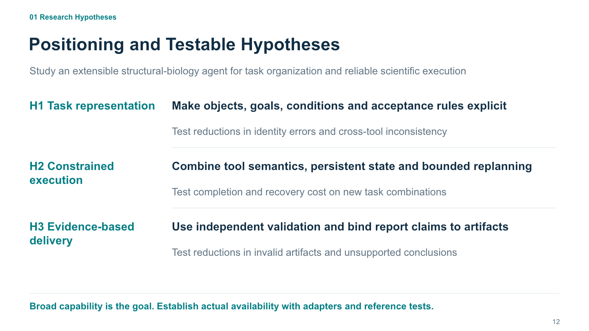
Slide content
| H1 Task representation | Make objects, goals, conditions and acceptance rules explicit | Test reductions in identity errors and cross-tool inconsistency |
| H2 Constrained execution | Combine tool semantics, persistent state and bounded replanning | Test completion and recovery cost on new task combinations |
| H3 Evidence-based delivery | Use independent validation and bind report claims to artifacts | Test reductions in invalid artifacts and unsupported conclusions |
Broad capability is the goal. Establish actual availability with adapters and reference tests.
These hypotheses and benefits remain to be tested. Start with one controller, extensible tools and validation rules. More agents, a model upgrade or a larger compute budget do not automatically establish improved scientific validity.
13 Capability Map I: Data, Building and Experiments
Organize tasks by modality across proteins, nucleic acids, ligands, glycans and complexes
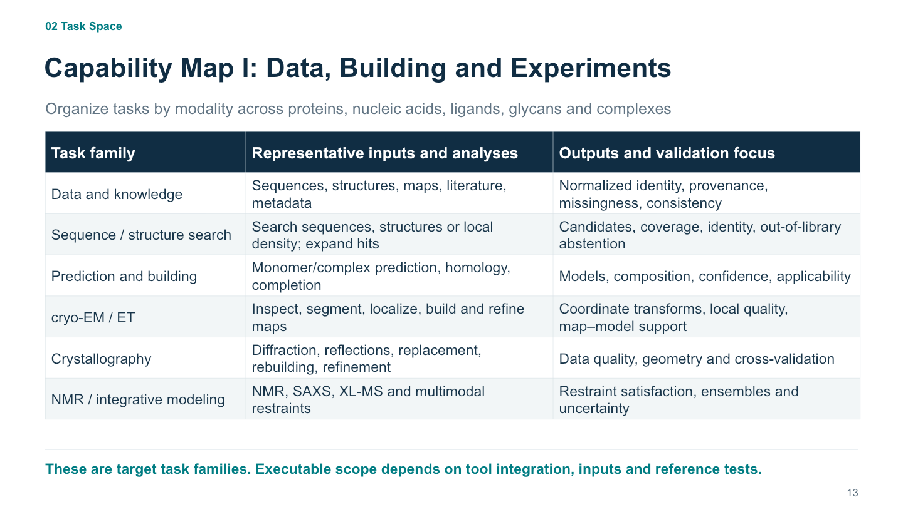
Slide content
| Task family | Representative inputs and analyses | Outputs and validation focus |
| Data and knowledge | Sequences, structures, maps, literature, metadata | Normalized identity, provenance, missingness, consistency |
| Sequence / structure search | Search sequences, structures or local density; expand hits | Candidates, coverage, identity, out-of-library abstention |
| Prediction and building | Monomer/complex prediction, homology, completion | Models, composition, confidence, applicability |
| cryo-EM / ET | Inspect, segment, localize, build and refine maps | Coordinate transforms, local quality, map–model support |
| Crystallography | Diffraction, reflections, replacement, rebuilding, refinement | Data quality, geometry and cross-validation |
| NMR / integrative modeling | NMR, SAXS, XL-MS and multimodal restraints | Restraint satisfaction, ensembles and uncertainty |
These are target task families. Executable scope depends on tool integration, inputs and reference tests.
14 Capability Map II: Analysis, Simulation and Design
Analysis modules can run independently or form new research workflows through the agent
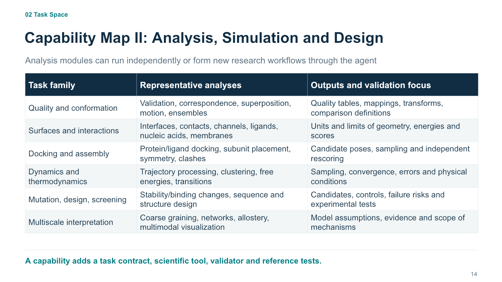
Slide content
| Task family | Representative analyses | Outputs and validation focus |
| Quality and conformation | Validation, correspondence, superposition, motion, ensembles | Quality tables, mappings, transforms, comparison definitions |
| Surfaces and interactions | Interfaces, contacts, channels, ligands, nucleic acids, membranes | Units and limits of geometry, energies and scores |
| Docking and assembly | Protein/ligand docking, subunit placement, symmetry, clashes | Candidate poses, sampling and independent rescoring |
| Dynamics and thermodynamics | Trajectory processing, clustering, free energies, transitions | Sampling, convergence, errors and physical conditions |
| Mutation, design, screening | Stability/binding changes, sequence and structure design | Candidates, controls, failure risks and experimental tests |
| Multiscale interpretation | Coarse graining, networks, allostery, multimodal visualization | Model assumptions, evidence and scope of mechanisms |
A capability adds a task contract, scientific tool, validator and reference tests.
15 Structural Biology Agent: Core Architecture
Separate model cognition, deterministic control, scientific execution and evidence management
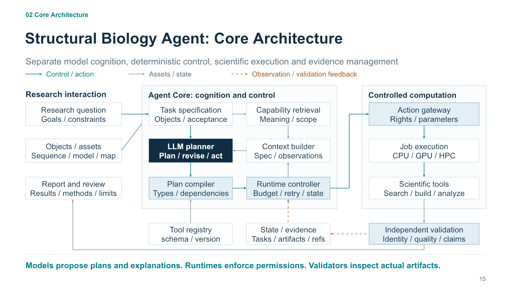
Slide content
| Cognition and planning | Task specifications, capability/knowledge retrieval, context assembly, LLM planning and revision |
| Deterministic control | Plan compilation, type checks, state machine, budgets and recovery |
| Controlled computation | Permission gateway, job scheduling, scientific tools and real artifacts |
| Evidence and validation | Tool contracts, state/artifact references, independent quality checks and report support |
| Scientific delivery | Validated results, methods, limitations and human review |
Models propose plans and explanations. Runtimes enforce permissions. Validators inspect actual artifacts.
Proposed system architecture, not a linear workflow. Research tasks and data enter through specification. A context builder combines retrieved capabilities and recorded observations for the planner. Actions pass deterministic plan checks, a permission gateway and job management. Independent validation writes structured observations into evidence/state for later decisions. Tool documentation, checkpoints and immutable artifacts remain logically separate. The legend distinguishes control, assets/state and feedback.
Original papers, documentation and projects
16 The Agent Loop: State, Actions and Validation
Explicit state supports action selection, controlled execution and the next state update
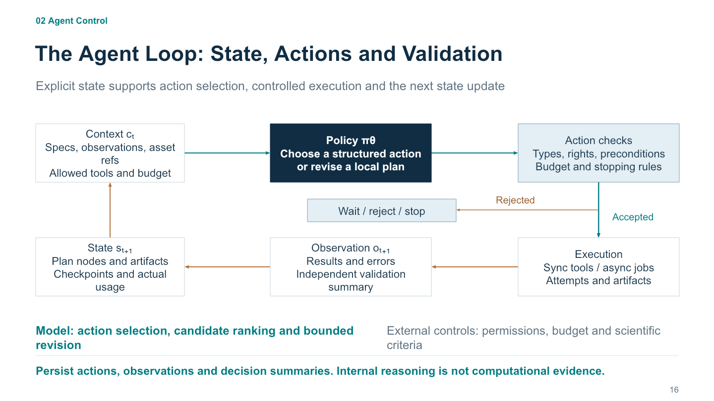
Slide content
| Context cₜ | Specs, observations, asset refs Allowed tools and budget |
| Policy πθ | Choose a structured action or revise a local plan |
| Action checks | Types, rights, preconditions Budget and stopping rules |
| Execution | Sync tools / async jobs Attempts and artifacts |
| Observation oₜ₊₁ | Results and errors Independent validation summary |
| State sₜ₊₁ | Plan nodes and artifacts Checkpoints and actual usage |
Persist actions, observations and decision summaries. Internal reasoning is not computational evidence.
A plan is a candidate execution scheme, not a scientific fact. The policy may revise a local plan using observations. Changed scientific intent requires a new specification version. Runtime and scientific checks are external constraints: a model cannot turn failure into success through explanation. Stop on exhausted budgets or unrecoverable failures.
17 Task Specifications Make Intent Computable
Example request: compare two complex interfaces and identify which contacts change
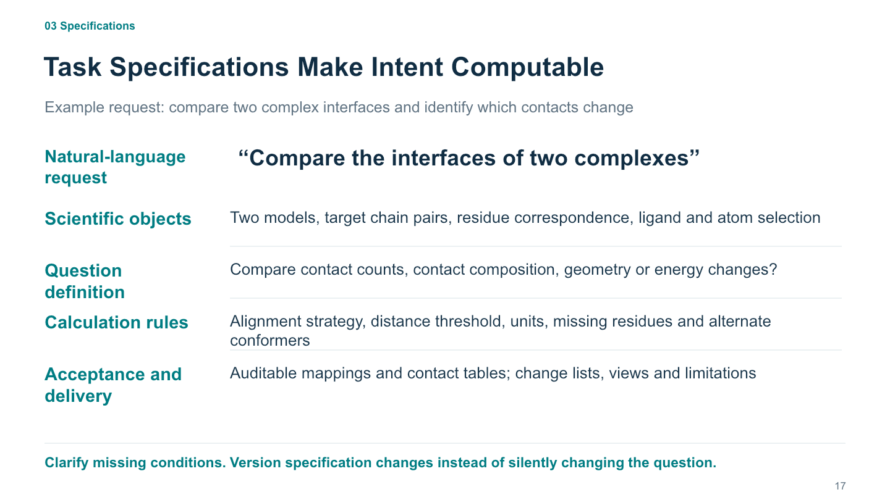
Slide content
| Scientific objects | Two models, target chain pairs, residue correspondence, ligand and atom selection |
| Question definition | Compare contact counts, contact composition, geometry or energy changes? |
| Calculation rules | Alignment strategy, distance threshold, units, missing residues and alternate conformers |
| Acceptance and delivery | Auditable mappings and contact tables; change lists, views and limitations |
Clarify missing conditions. Version specification changes instead of silently changing the question.
This illustrates task understanding and specification, not JSON that an existing endpoint necessarily accepts. Other tasks need modality-specific fields: map voxel/origin/axis, trajectory topology/periodicity/time units, or reflection data with working and validation sets.
18 Planning Combines Retrieval and Dependencies
Retrieve applicable capabilities, then compose steps with compatible input and output conditions
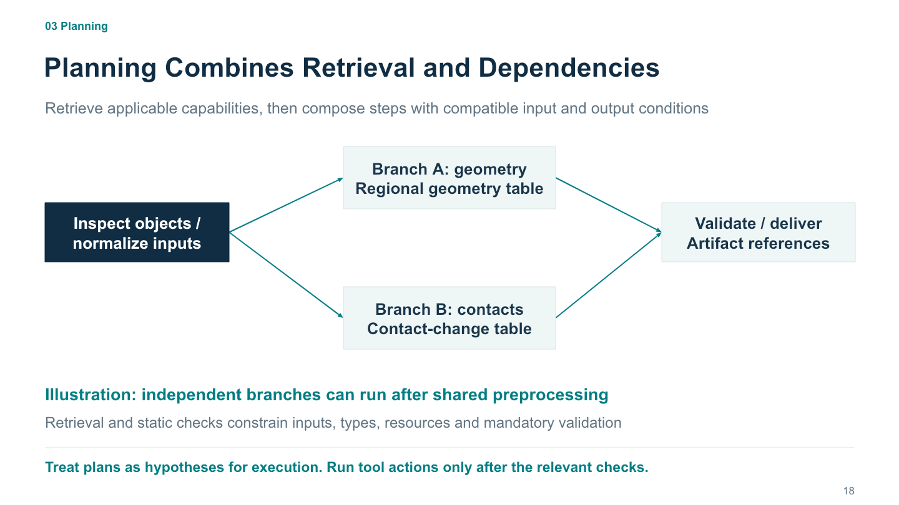
Slide content
| Capability retrieval | Filter tools by semantics, input types, preconditions, versions and resources |
| Plan compilation | Build a dependency DAG and identify the artifact passed on every edge |
| Static checks | Check available inputs, type compatibility, resources and required validation |
| Bounded revision | Use observations to adjust candidates or local steps within revision and total-cost limits |
Treat plans as hypotheses for execution. Run tool actions only after the relevant checks.
Original papers, documentation and projects
19 The Registry Makes Scientific Tools Discoverable
A tool contract describes semantics, execution conditions and verifiable artifacts
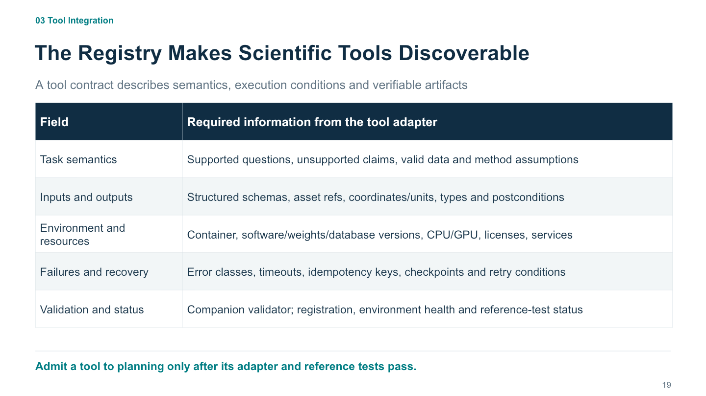
Slide content
| Field | Required information from the tool adapter |
| Task semantics | Supported questions, unsupported claims, valid data and method assumptions |
| Inputs and outputs | Structured schemas, asset refs, coordinates/units, types and postconditions |
| Environment and resources | Container, software/weights/database versions, CPU/GPU, licenses, services |
| Failures and recovery | Error classes, timeouts, idempotency keys, checkpoints and retry conditions |
| Validation and status | Companion validator; registration, environment health and reference-test status |
Admit a tool to planning only after its adapter and reference tests pass.
20 State Controls the Next Action
The model reads recorded facts. An external state machine enforces actions and stopping rules
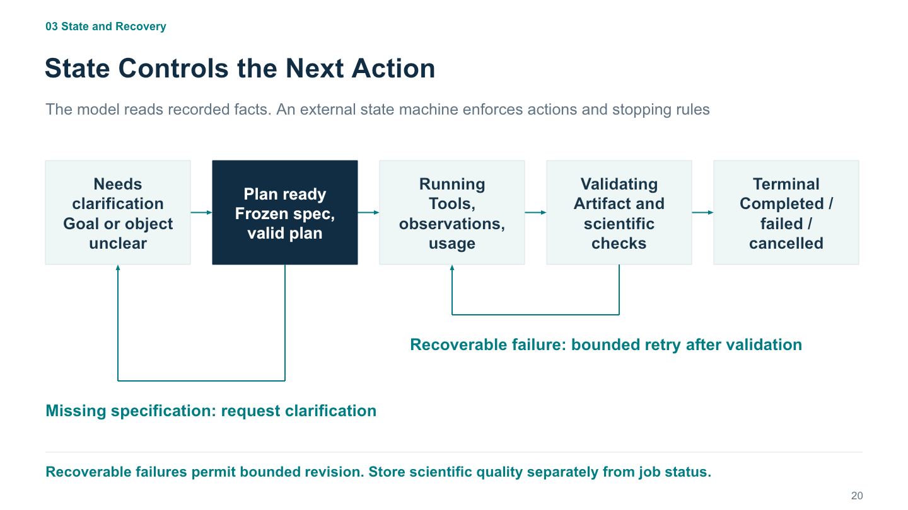
Slide content
| Needs clarification | Goal or object unclear |
| Plan ready | Frozen spec, valid plan |
| Running | Tools, observations, usage |
| Validating | Artifact and scientific checks |
| Terminal | Completed / failed / cancelled |
Recoverable failures permit bounded revision. Store scientific quality separately from job status.
Record action requests, observations and decision summaries. State handles waiting, recovery and termination. Language cannot override failed validation. Account for all attempts when enforcing budgets.
21 Long Jobs Are Independent of Model Sessions
Use one job interface for small synchronous tools, asynchronous CPU/GPU work and remote computation
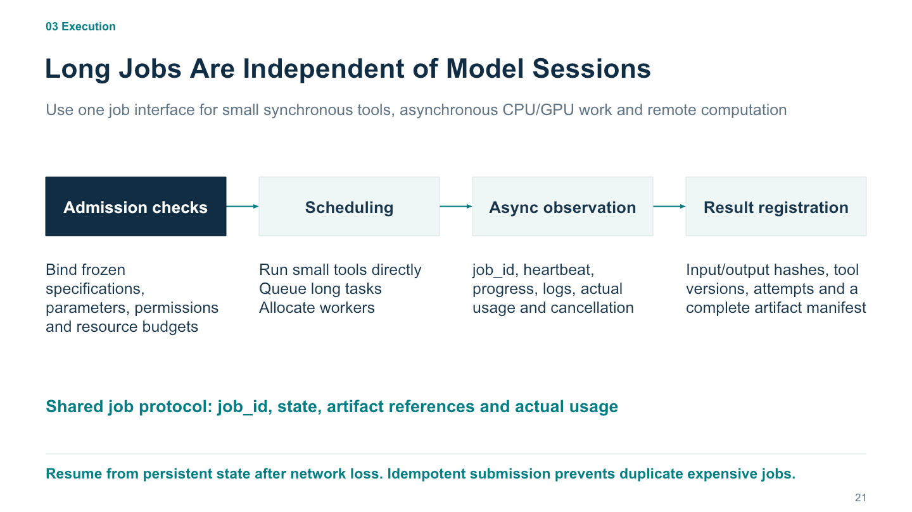
Slide content
| Admission checks | Bind frozen specifications, parameters, permissions and resource budgets |
| Scheduling | Run small tools directly Queue long tasks Allocate workers |
| Async observation | job_id, heartbeat, progress, logs, actual usage and cancellation |
| Result registration | Input/output hashes, tool versions, attempts and a complete artifact manifest |
Resume from persistent state after network loss. Idempotent submission prevents duplicate expensive jobs.
22 Context, State, Knowledge and Artifacts
Give the model sufficient decision context while keeping scientific data in controlled storage
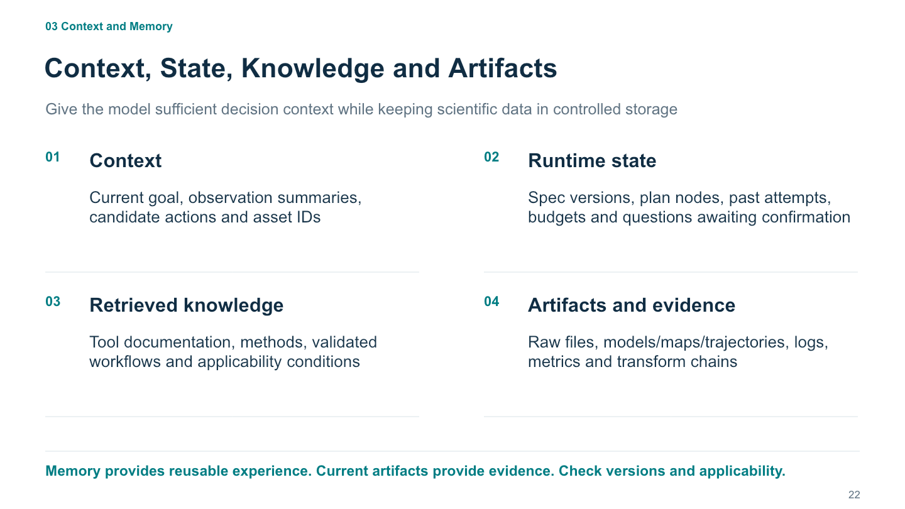
Slide content
| Context | Current goal, observation summaries, candidate actions and asset IDs |
| Runtime state | Spec versions, plan nodes, past attempts, budgets and questions awaiting confirmation |
| Retrieved knowledge | Tool documentation, methods, validated workflows and applicability conditions |
| Artifacts and evidence | Raw files, models/maps/trajectories, logs, metrics and transform chains |
Memory provides reusable experience. Current artifacts provide evidence. Check versions and applicability.
23 Validation Separates Execution from Science
One agent framework uses different scientific validators according to the task specification
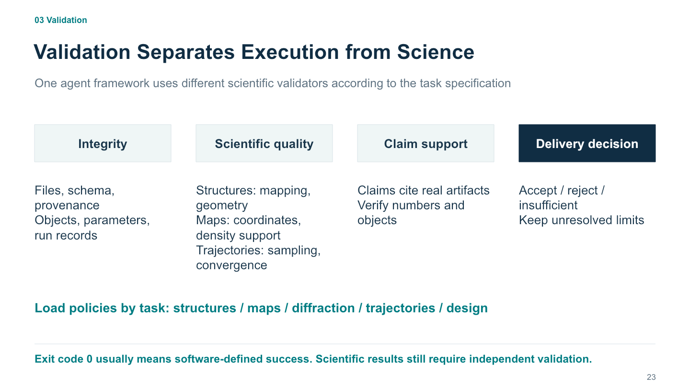
Slide content
| Integrity checks | Files, schema, provenance Objects, parameters, run records |
| Domain checks | Structures: mapping, geometry Maps: coordinates, density support Trajectories: sampling, convergence |
| Claim checks | Claims cite real artifacts Verify numbers and objects |
| Delivery decision | Accept / reject / insufficient Keep unresolved limits |
Exit code 0 usually means software-defined success. Scientific results still require independent validation.
Original papers, documentation and projects
24 Example I: Unknown Density to Candidate Models
With only a density region, the system selects branches according to available inputs
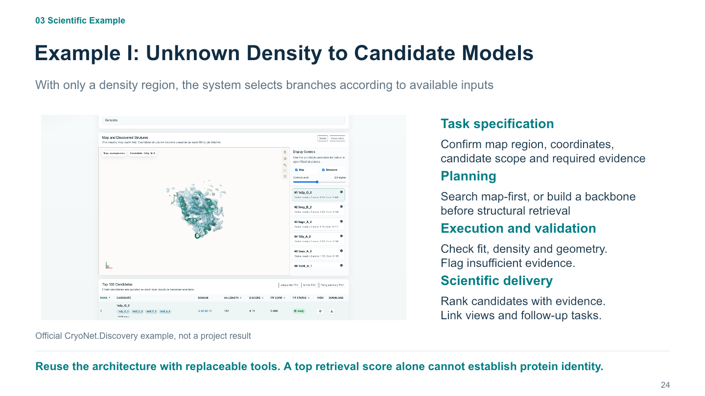
Slide content
| Task specification | Confirm map region, coordinates, candidate scope and required evidence |
| Planning | Search map-first, or build a backbone before structural retrieval |
| Execution and validation | Check fit, density and geometry. Flag insufficient evidence. |
| Scientific delivery | Rank candidates with evidence. Link views and follow-up tasks. |
Reuse the architecture with replaceable tools. A top retrieval score alone cannot establish protein identity.
Illustrative proposed workflow. The figure is an official CryoNet.Discovery example, not a run of this project’s agent.
Original papers, documentation and projects
25 Example II: Motion and Interfaces in Trajectories
Question: how do domain motion and interfacial contacts change together during this simulation?
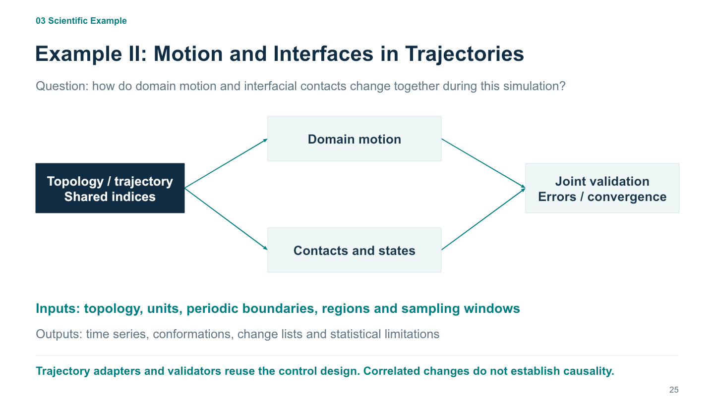
Slide content
| Task specification | Topology/trajectory, time units, periodic boundaries, chains/regions and analysis definitions |
| Planning | Unwrap and align; run geometry, contacts and clustering as dependencies permit |
| Execution and validation | Check atom mappings, sampling windows, correlation, convergence and uncertainty |
| Scientific delivery | Time series, representative conformations, statistics and limits of physical interpretation |
Trajectory adapters and validators reuse the control design. Correlated changes do not establish causality.
Proposed scenario, not a completed MD analysis. Parallel branches must share preprocessing versions and time indices. Mark limited evidence when sampling is inadequate; trajectory frames are not independent samples.
26 Deployment: Services, Workers and Evidence
Separate cognition, job execution and scientific data, coordinating them through persistent state
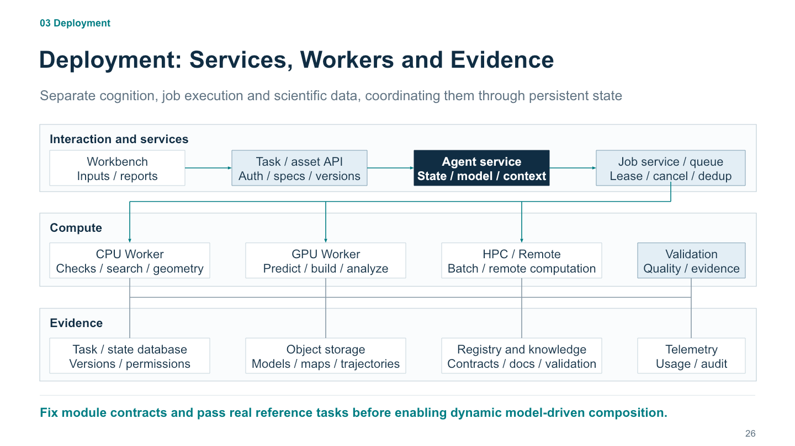
Slide content
| Interaction and API | Web workbench and task/asset models, e.g. FastAPI/Pydantic |
| Agent service | A state graph such as LangGraph, model adapters and retrieval |
| Job service | Queue, leases, idempotency, cancellation and events |
| Compute and evidence | CPU/GPU/HPC workers, object storage, metadata and independent validation |
Fix module contracts and pass real reference tasks before enabling dynamic model-driven composition.
Recommended design. Web/API and agent services do not directly execute arbitrary scientific commands. The job service invokes isolated workers. A relational database stores tasks, state, versions and permissions. Object storage holds models, maps, trajectories and logs. Registries and validators are versioned separately. The first release need not implement every GPU/HPC backend.
Original papers, documentation and projects
27 Experiments Measure the Agent’s Contribution
Hold tools and data capabilities fixed while comparing decision and control mechanisms
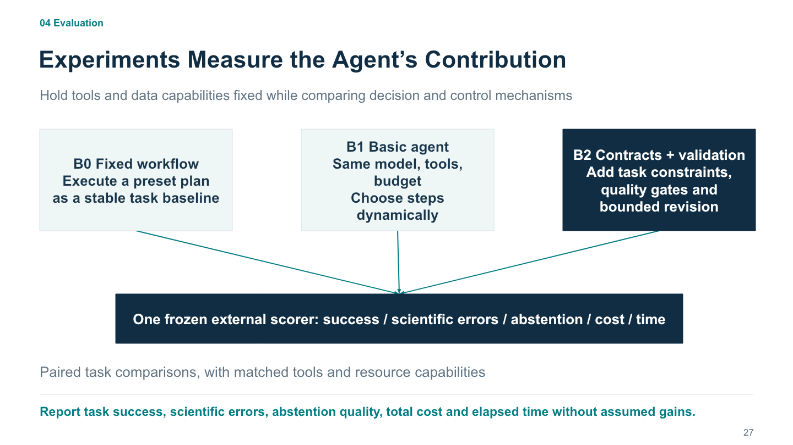
Slide content
| B0 Fixed workflow | Execute a preset plan as a stable task baseline |
| B1 Basic agent | Same model, tools, budget Choose steps dynamically |
| B2 Contracts + validation | Add task constraints, quality gates and bounded revision |
| External scoring | Use one frozen scorer and retain all tasks in denominators |
Report task success, scientific errors, abstention quality, total cost and elapsed time without assumed gains.
28 Optimization Starts with Failure Attribution
Held-out combinations and mechanism ablations test generalization as well as cost
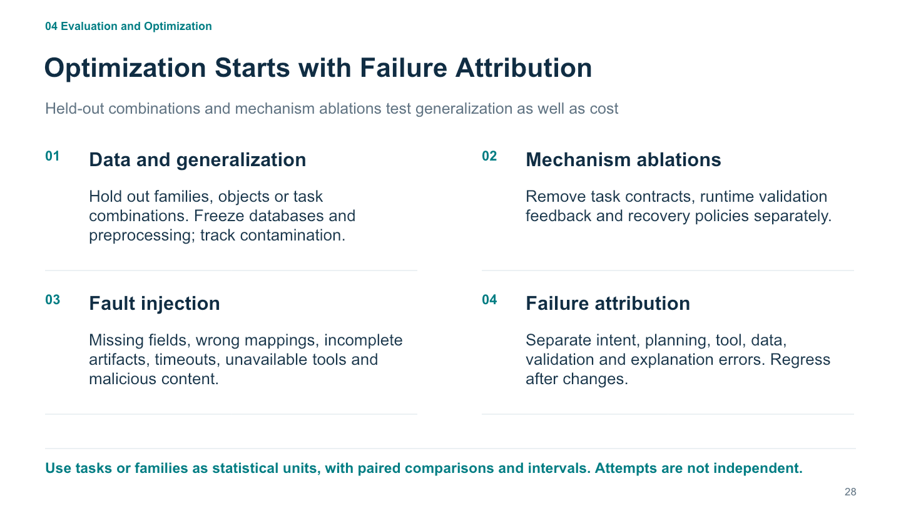
Slide content
| Data and generalization | Hold out families, objects or task combinations. Freeze databases and preprocessing; track contamination. |
| Mechanism ablations | Remove task contracts, runtime validation feedback and recovery policies separately. |
| Fault injection | Missing fields, wrong mappings, incomplete artifacts, timeouts, unavailable tools and malicious content. |
| Failure attribution | Separate intent, planning, tool, data, validation and explanation errors. Regress after changes. |
Use tasks or families as statistical units, with paired comparisons and intervals. Attempts are not independent.
29 Safety Controls Are Part of Execution
A model must respect the tool gateway, data policies and resource boundaries
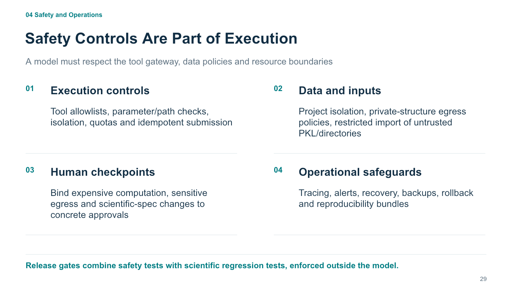
Slide content
| Execution controls | Tool allowlists, parameter/path checks, isolation, quotas and idempotent submission |
| Data and inputs | Project isolation, private-structure egress policies, restricted import of untrusted PKL/directories |
| Human checkpoints | Bind expensive computation, sensitive egress and scientific-spec changes to concrete approvals |
| Operational safeguards | Tracing, alerts, recovery, backups, rollback and reproducibility bundles |
Release gates combine safety tests with scientific regression tests, enforced outside the model.
30 Development Roadmap and Delivery Gates
Progress by verifiable system capabilities while expanding scientific task coverage
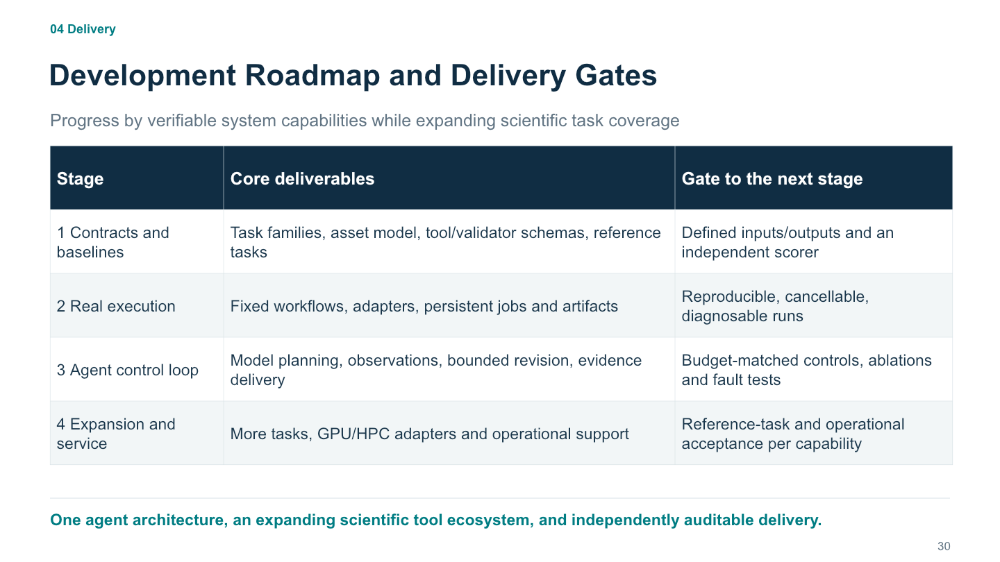
Slide content
| Stage | Core deliverables | Gate to the next stage |
| 1 Contracts and baselines | Task families, asset model, tool/validator schemas, reference tasks | Defined inputs/outputs and an independent scorer |
| 2 Real execution | Fixed workflows, adapters, persistent jobs and artifacts | Reproducible, cancellable, diagnosable runs |
| 3 Agent control loop | Model planning, observations, bounded revision, evidence delivery | Budget-matched controls, ablations and fault tests |
| 4 Expansion and service | More tasks, GPU/HPC adapters and operational support | Reference-task and operational acceptance per capability |
One agent architecture, an expanding scientific tool ecosystem, and independently auditable delivery.
Implementation roadmap for the 30-slide proposal. Existing PRD 0.2 remains the defined development baseline. Extend contracts and adapters for new scientific tasks rather than creating a parallel baseline. This update delivers research/design material, not a newly deployed agent service.